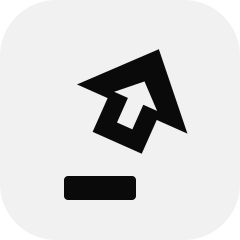

Apps
Caps + S and your terminal is just there. Not running? It starts. Hiding with no window? It opens one. No more fishing in the Dock.

CapsJump GitHubIt spent decades waiting for someone to SHOUT. Now hold it and press a key: your terminal is just there, GitHub opens in your work Chrome account, the window snaps to half the screen. One small file says which key does what.
brew install --cask stigmer/tap/capsjump
Free and open source, for macOS 13 or later.
Caps Lock + G lands on the pull requests tab, in the work account.
Caps + S and your terminal is just there. Not running? It starts. Hiding with no window? It opens one. No more fishing in the Dock.
Caps + G lands on the GitHub tab in your work account. Not your personal one. Never your personal one. No tab yet? It opens one in the right place.
Caps + ← or → sends the front window to half the screen. Caps + F and it goes big.
Caps + W drops you into a Slack channel, a Zoom room or any web page, in the app that owns the link. Bookmarks, but with legs.
Each key does one thing. Open it from the menu bar with Edit Config…; save it and the change applies at once. Check Config says what every key will do.
sites:
- name: github
account: you@work.com
open: https://github.com/your-org/your-repo/pulls
keys:
s: {app: iTerm}
t: {app: Finder}
g: {site: github}
left: {window: left-half}
right: {window: right-half}
f: {window: maximize}
w: {url: 'slack://channel?team=T123&id=C456'}Key names: a–z, 0–9, f1–f12 and the arrows. A file with no keys: leaves Caps Lock as it is.
brew trust stigmer/tap
brew install --cask stigmer/tap/capsjump
capsjump setup
capsjump initcapsjump setup asks for the permissions once (Accessibility, Chrome automation, notifications) and starts CapsJump at login. A Caps Lock symbol appears in the menu bar.capsjump init writes a starter ~/.capsjump.yaml in your first Chrome account; capsjump profiles lists the others. Edit it, then run capsjump check.